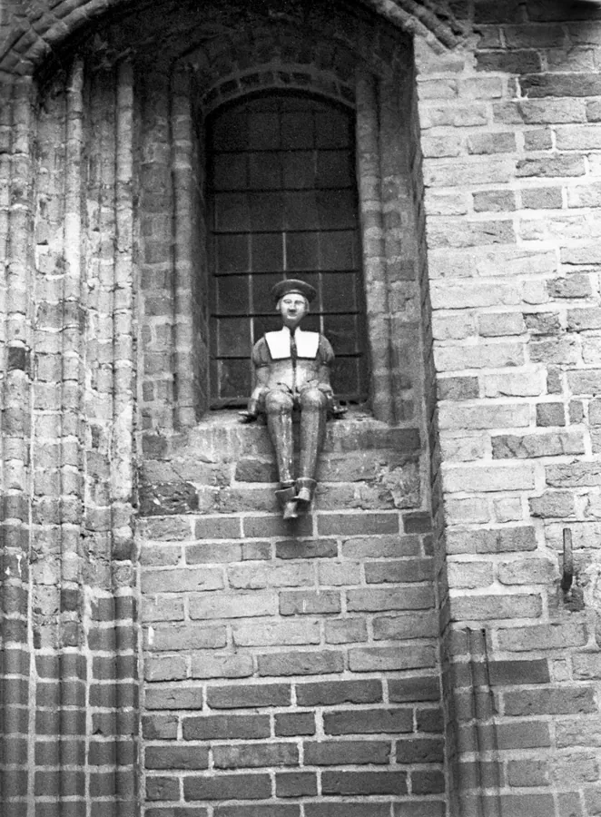
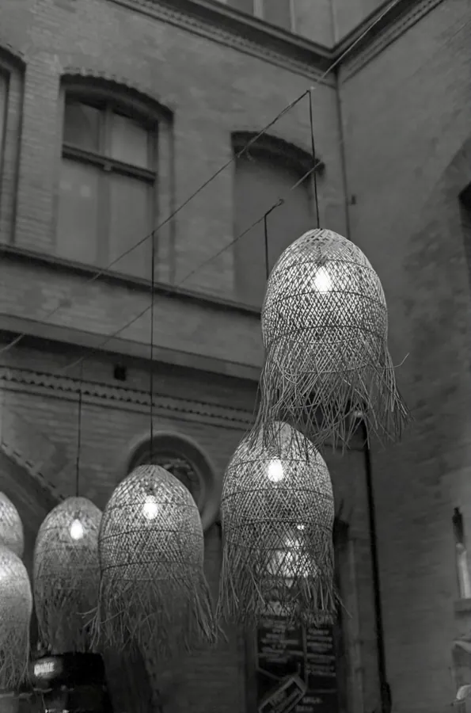
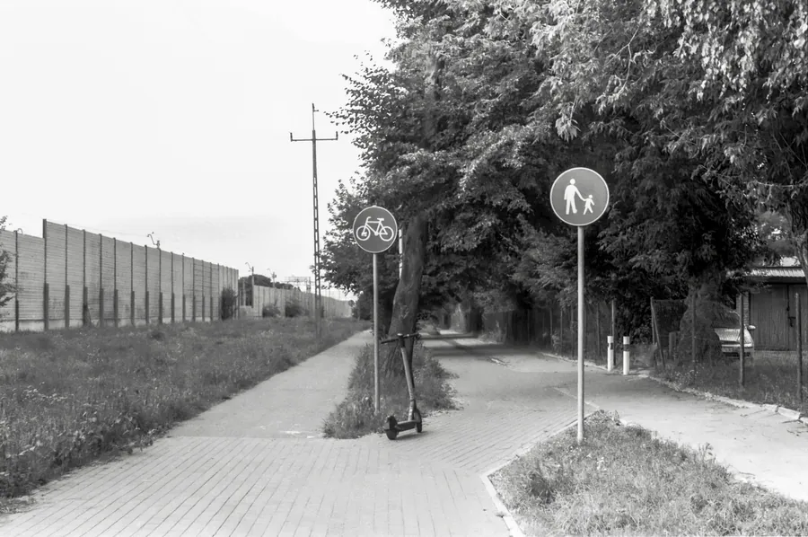
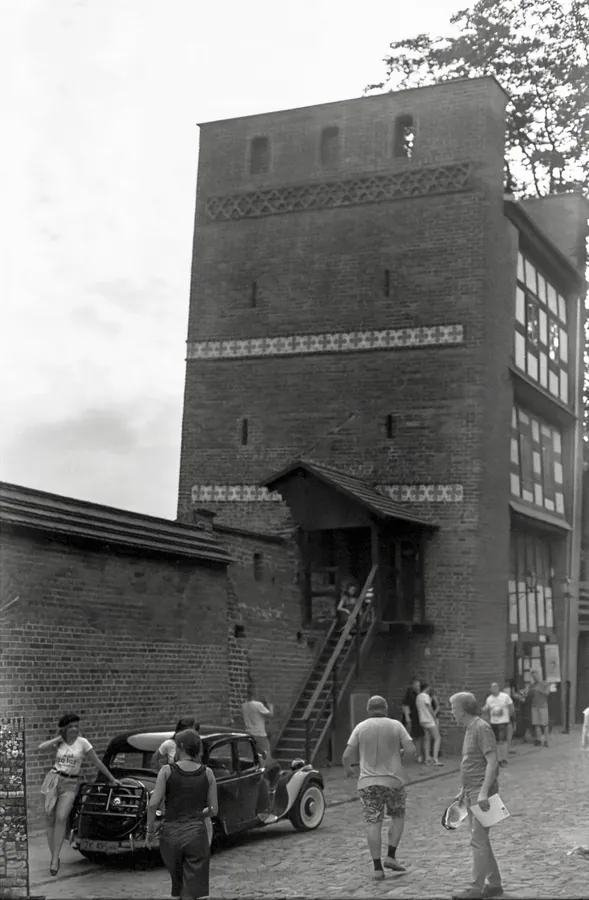
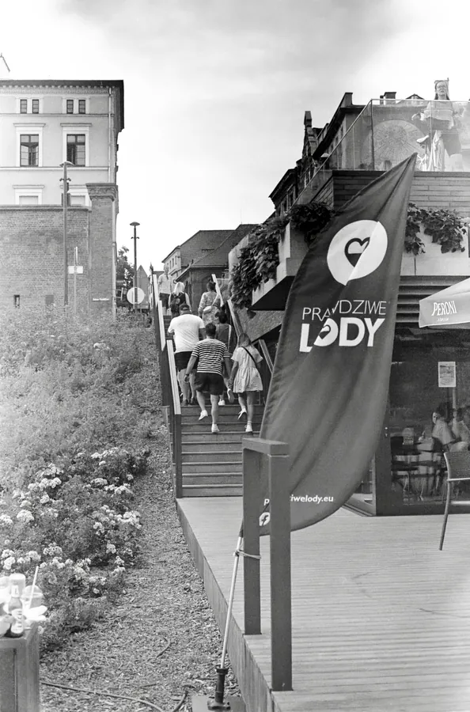
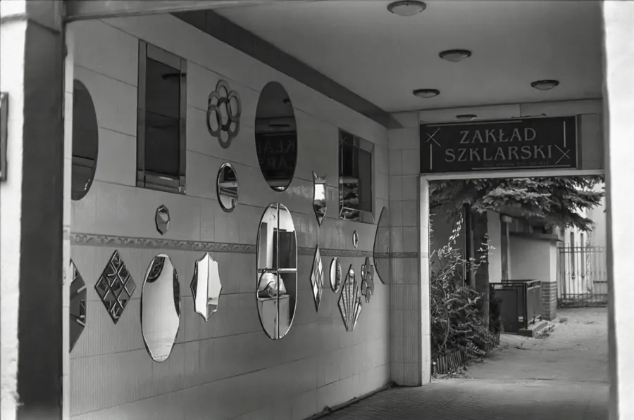

Przejdź do treści
Zenbliski
Menu
Archiwalne
Analogowe
Kolekcja
Akcesoria foto
Materiały reklamowe
Artykuły – blog
Foto ciekawostki
Cyfrowe
Analogowe
Nikon FA, Ilford HP5 Plus
Aparat
Nikon FA
Obiektyw
Nikkor 50 mm 1:1,4
Film
Ilford HP5 Plus






Poprzednia
Nikon F90X, Kentmere Pan 100